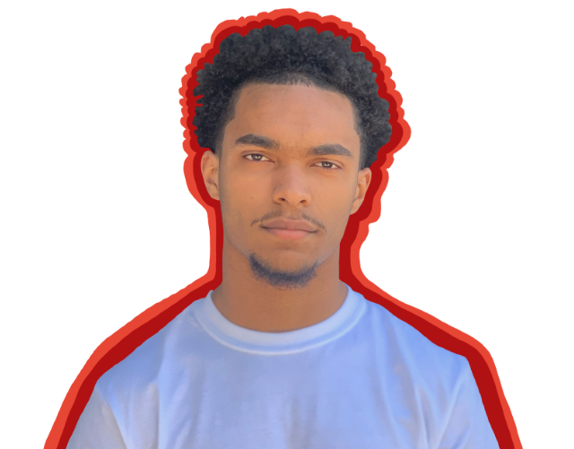
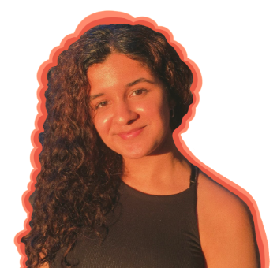
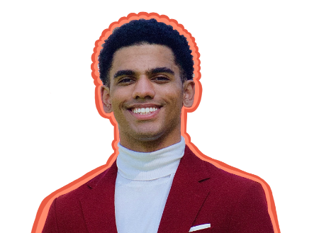

Home
Chief of Staff
☰
Home
Chief of Staff
☰
The Academic and Professional Opportunities (APO) Department is committed to connecting underrepresented students in the Pre-Law, Pre-Business, Pre-Med, and STEM fields with the necessary resources to help them achieve career success.
Stephanie Wong is the Academic and Professional Opportunities Executive for the Office of ASUC Senator Chaka Tellem. She is currently a sophomore majoring in Political Science and Global Studies with an emphasis on Asia. Among the many reasons for joining Chaka’s team, she resonates strongly (and still does) with his belief in uplifting underrepresented minorities through education and opportunity access. Outside of the ASUC, she is involved with the Phi Alpha Delta Pre-Law Fraternity, recreational volleyball, and Cal Parli Debate Team. She is also passionate about much-needed conversations in our political system, especially when it pertains to advancing the Asian American and Pacific Islander Community. Please do not hesitate to reach out to her if you would like to join our APO team!
Kalliope Zervas is a 3rd year Chemical Biology major from Sacramento, California. Kalliope has always aspired to help those in need, participating in a variety of extracurricular activities to do so, including being in the midst of starting her own non-profit giving medical supplies to countries in need. Kalliope also participates in STEM research and she hopes to help other STEM students, who would otherwise be disadvantaged, get involved in similar academic opportunities . After Cal, she hopes to one day become a Trauma Surgeon in the Doctors Without Borders program and/or work in politics in order to help reform the US healthcare system. In her free time, she loves to paint, dance, and play with her dogs!
Alfonse Dalcour is a sophomore who is an intended Business Administration major serving as the Pre-Business Administrator in the APO Department. While deciding what he wanted to major in he realized he knew he wanted to do business, but he wasn’t sure what that exactly meant. Alfonse wants to help others like himself who are in the process of figuring out what their path is. He devotes a lot of his energy into doing things that help him relax. In his free time he likes to work out, play the video game, or sleep.
Isha Shah is the Pre-Med Academic and Professional Opportunities Administrator for the ASUC Office of Chaka Tellem. She is a junior majoring in Bioengineering, with a minor in Public Policy and Design Innovation, and is originally from Toronto, Canada. Isha’s passion to provide equitable education stems from her involvement as a Special Needs Education Tutor and Youth Empowerment Activist in highschool. After graduation, she wants to pursue medicine, while integrating healthcare and technology to provide accessible patient care to low income and underserved populations. Within the Berkeley Community, she is also a Campus Ambassador, Undergraduate Researcher at UCSF Medicine and part of the Society of Women Engineers.
Jacob Williams is a first-year studying MCB Neurobiology and Cognitive Science, currently serving as the Pre-Med Academic and Professional Opportunities Administrator for the ASUC Office of Chaka Tellem. As a Bay Area native, Jacob attended Oakland School for the Arts before becoming a Shelby Davis Scholar and representing the United States at the United World College in Mostar, Bosnia and Herzegovina where he completed the IB Diploma before coming to Cal. Abroad, Jacob found his passion for public justice while volunteering in a post-war conflict zone as well as an underlying theme of academic study in STEM which aided his ability to positively impact lives within the local community and the Balkan region. At Cal, Jacob hopes to bring his passion for STEM to his studies in Pre-Med and eventually pursue Medical School. In his free time, he likes to travel, dance, have deep-conversations about the randomest topics, and explore the unknown.
Katarina Stankovic is the Pre-Law Academic and Professional Opportunities Administrator for ASUC Senator Chaka Tellem’s office. She is a sophomore studying Political Science from Los Angeles, California. Katarina is passionate about helping underserved communities by uplifting their voices in any way possible. She has always been a community advocate and continues to prioritize social justice going towards the future. In her free time, she likes to ski, explore hiking trails, scuba dive, write, and practice various languages. She is someone who enjoys meeting new people and willing to learn unique things from others.